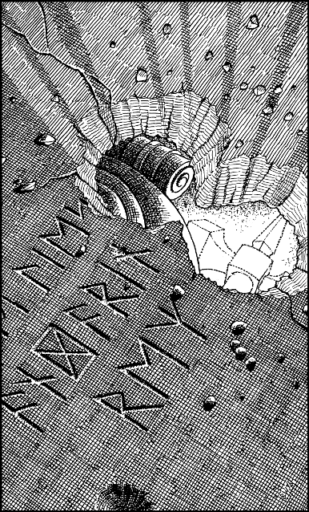

283
You hear the Brozal slowing as they draw near to the junction, and your skin prickles with a premonition of danger. Your Kai senses detect the approach of a malevolent entity, a creature in their company that is exuding a powerful aura of evil. Fearing that you may be discovered if you stay here, you silently slip away along the passage.
Soon you arrive at a great bronze door. It is inlaid with ancient Drodarin runes and embellished with gold leaf. Gently you push against its cold surface, and the portal swings open to reveal a gloomy chamber. You sense no threat here and so you enter and then push the door closed behind you.
The walls of this chamber are lined with alcoves which are filled with ornate burial urns. Some have been smashed, and their powdery contents lie scattered upon the marble floor. You quickly determine that you have entered a Drodarin cinerarium—a place where the cremated remains of dwarven warriors are laid to rest. Such chambers are considered sacred by the Drodarin, and it saddens you to see that this one has been wantonly desecrated by Shom’zaa minions.
A large tomb dominates the centre of the chamber. Its lid is cracked and holed where the minions have attempted to force an entry. Drodarin script embellishes its dusty surfaces, and when you make a closer inspection, your pulse quickens. This is the tomb of Andarin—the first King of Bor. Through a small hole that punctures the tomb’s lid, you can see part of the king’s burial urn. It is lit by the supernatural glow of a golden warhammer that rests beside it. Your Kai senses detect that this is a powerful, magical weapon.

If you wish to attempt to open the lid of this tomb, turn to 118.
If you choose to leave the tomb of King Andarin undisturbed, turn to 230.